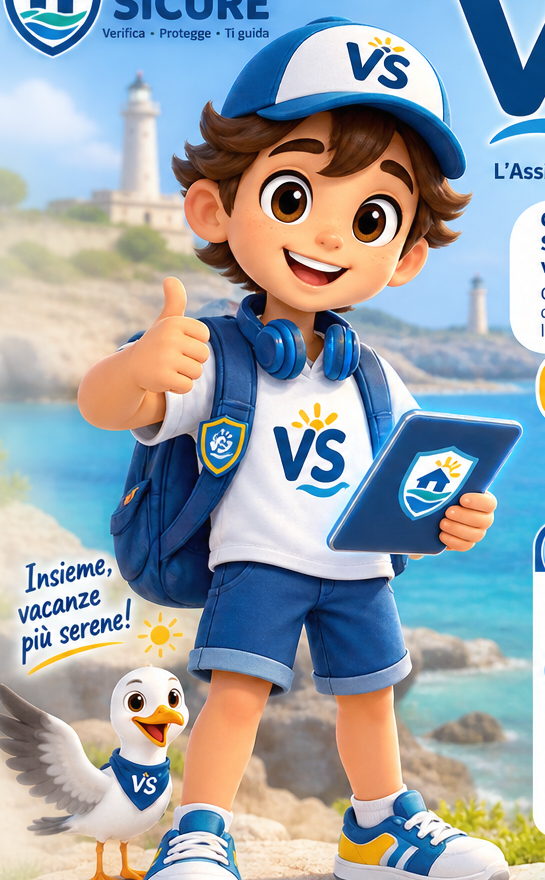
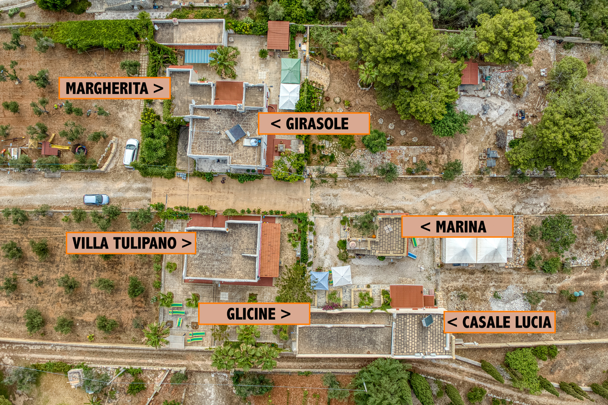

🧳
Viaggiatore
Controlla annunci e strutture, chiedi chiarimenti a VìSì, consulta territorio ed eventi e apri una segnalazione quando serve.
Inizia un controlloVacanze Sicure nasce per aiutarti a verificare ciò che ti è stato promesso, scegliere con maggiore consapevolezza e ridurre le brutte sorprese prima, durante e dopo il soggiorno.
L'obiettivo principale non è venderti il maggior numero possibile di servizi turistici, ma aiutarti a capire se struttura, pagamento e servizi corrispondono a ciò che ti è stato presentato.
Controlli sull'identità e sulla coerenza delle caratteristiche dichiarate.
Più chiarezza su soggetto e modalità di pagamento.
Servizi ed esperienze devono essere identificabili e coerenti.
Segnalazioni documentate e pratiche tracciate.
Hai trovato una casa o un servizio online? Mandaci il link o i dati.
Il CIN è uno degli elementi da controllare, ma non è una garanzia.
Una sagra, un concerto o un appuntamento pubblico? Faccelo sapere.
Candidati per collaborare con Vacanze Sicure oppure entra nella rete di professionisti disponibili per gli Host.
Pulizie, manutenzione, check-in, bagnini, addetti spiaggia, camerieri, barman, autisti e altri professionisti: la rete VS è progettata per cercare risorse per categoria e territorio.
Strutture, unità, foto, dotazioni, prenotazioni, messaggi, pratiche e servizi confluiscono progressivamente in un'unica piattaforma, con storico e provenienza dei dati.
Vacanze Sicure è progettata per accompagnare soggetti diversi senza confondere ruoli e responsabilità: ciascuno accede alle funzioni e alle informazioni per cui è autorizzato.
Controlla annunci e strutture, chiedi chiarimenti a VìSì, consulta territorio ed eventi e apri una segnalazione quando serve.
Inizia un controlloUna Scheda Master per struttura e alloggi, con descrizioni, foto, dotazioni, disponibilità, canali e servizi operativi. Le funzioni gestionali vengono attivate progressivamente.
Area HostIndica categoria, territorio, disponibilità e tipo di collaborazione: direttamente con VS oppure, ove previsto, con gli Host che cercano il tuo servizio.
CandidatiVìSì è l’assistente virtuale di Vacanze Sicure. Ti orienta tra strutture, annunci, verifiche, territorio, servizi, pagamenti e pratiche usando le informazioni disponibili sulla piattaforma.
Importante: VìSì assiste e orienta, ma non attribuisce scudi, non conclude verifiche critiche e non sostituisce operatori, verificatori o supervisori.

Esplora l'Italia e l'Europa. Gli scudi sulla mappa indicano punti di navigazione o Paesi in cui Vacanze Sicure ha già informazioni registrate.
Le strutture che completano il percorso Vacanze Sicure vengono progressivamente pubblicate con il relativo scudo.

GuestHouse / Affittacamere. Percorso di verifica Vacanze Sicure completato.
Vedi schedaLe nuove schede saranno pubblicate solo dopo i controlli previsti per lo stato attribuito.
Stiamo ampliando progressivamente la rete di strutture e servizi verificati nei territori più richiesti.
Esplora la mappaVacanze Sicure può proporti le strutture verificate più vicine e compatibili, indicando chiaramente la distanza dalla destinazione richiesta.
Una struttura può ottenere maggiore visibilità commerciale, ma la promozione non modifica mai lo scudo o l'esito delle verifiche.
VS è progettata per ricercare e gestire personale e professionisti per categoria e area geografica, sia per esigenze interne sia per richieste dirette degli Host.
Pulizie, riassetto, lavanderia, check-in/check-out, reception, property management.
Addetti spiaggia, assistenti bagnanti abilitati, camerieri, barman, cucina e servizi stagionali.
Manutentori, elettricisti, idraulici, giardinieri, piscine e altri servizi tecnici.
Autisti e NCC con titoli richiesti, guide, fotografi, interpreti, consulenti e altri professionisti.
La piattaforma distingue il lavoro svolto direttamente per VS, le collaborazioni professionali e il semplice contatto con Host. Le modalità contrattuali dipendono dal caso concreto e dalla normativa applicabile.
Gli eventi supportati da fonti istituzionali vengono pubblicati come verificati, con fonte, date e informazioni utili.
Fiera di Sant’Oronzo, processione, Luna Park, spettacolo pirotecnico, iniziative a San Cataldo e Frigole, modifiche alla viabilità e servizi di accessibilità.